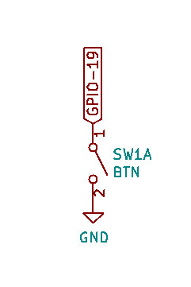
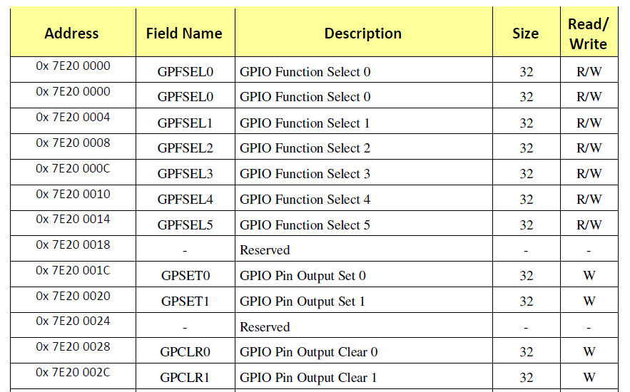
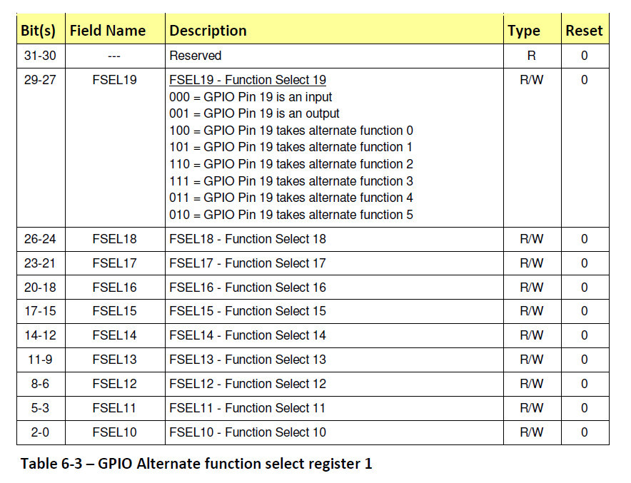
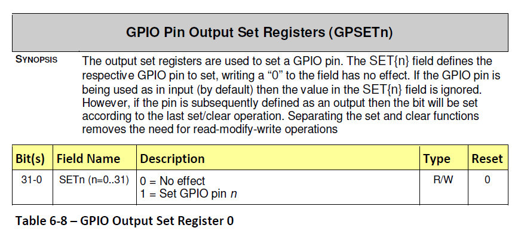
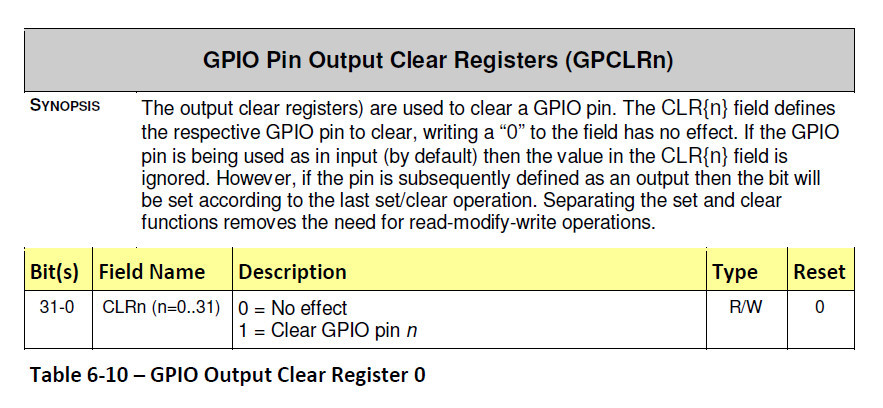
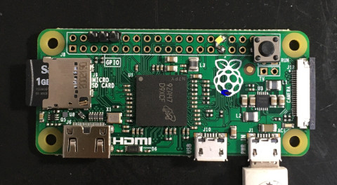
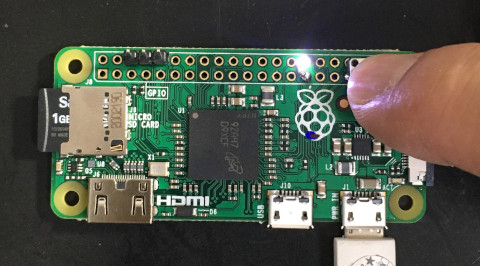

參考資料：
https://elinux.org/RPi_Software#ARM
https://github.com/dwelch67/raspberrypi
https://github.com/raspberrypi/firmware
https://www.raspberrypi.org/app/uploads/2012/02/BCM2835-ARM-Peripherals.pdf
按鍵連接到GPIO-19





.global _start
.equiv GPFSEL0, 0x20200000
.equiv GPFSEL1, 0x20200004
.equiv GPSET0, 0x2020001c
.equiv GPCLR0, 0x20200028
.equiv GPLEV0, 0x20200034
.equiv GPPUD, 0x20200094
.equiv GPPUDCLK0, 0x20200098
.arm
.text
_start:
b reset
b .
b .
b .
b .
b .
b .
b .
reset:
ldr r0, =GPFSEL0
ldr r1, =(1 << 15)
str r1, [r0]
ldr r0, =GPFSEL1
ldr r1, =0x00000000
str r1, [r0]
ldr r0, =GPPUD
ldr r1, =0x02
str r1, [r0]
ldr r0, =GPPUDCLK0
ldr r1, =(1 << 19)
str r1, [r0]
0:
ldr r0, =GPLEV0
ldr r1, [r0]
and r1, #(1 << 19)
cmp r1, #0
ldrne r0, =GPCLR0
ldreq r0, =GPSET0
ldr r1, =(1 << 5)
str r1, [r0]
b 0b
.end
完成

